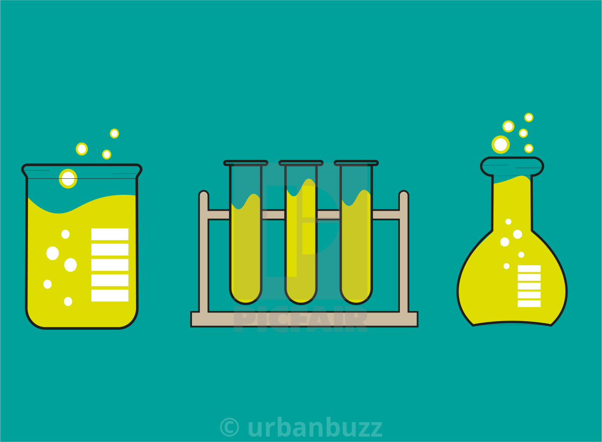
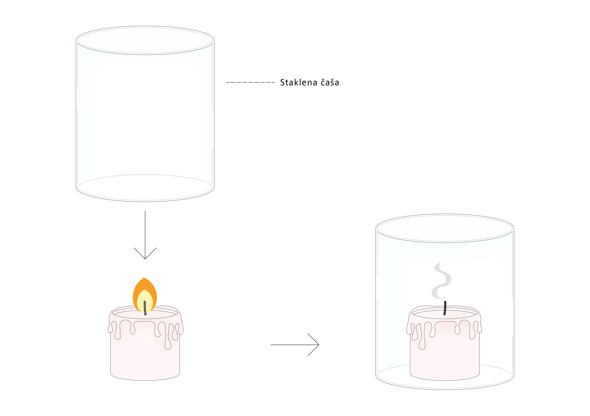

Kako dolazimo do saznanja o prirodi i spoljašnjem svetu? Ljudi su oduvek želeli da razumeju pravilnosti i zakone po kojima sve oko nas funkcioniše. Pretpostavimo, na primer, da nas neko pita kako znamo da postoji gravitaciona sila. Većina nas bi verovatno uzela predmet i pustila ga da padne na pod. Ako to ne ubedi našeg sagovornika, mogli bismo postupak da ponovimo vise puta, pod istim uslovima. Na taj način bismo izveli seriju eksperimenata.
Eksperiment je naučna metoda u kojoj simuliramo uslove da bismo utvrdili postojanje ili posmatrali neku pojavu. On se može ponavljati više puta, pod istim uslovima. Može se izvoditi u prirodi ili u laboratoriji.
 Kako biste na času fizike došli do zaključka da je vatri potreban kiseonik da bi gorela? Najverovatnije biste izveli eksperiment sa dve sveće, pri čemu biste jednu poklopili, a drugu ostavili otkrivenu. Ubrzo, samo druga sveća bi ostala da gori, dok bi se prva ugasila. Na isti način znamo da npr. papir pluta a kamenčići tonu. I te tvrdnje jako lako možemo proveriti eksperimentima.

Eksperimenti u verovatnoći
Slučajan eksperiment je eksperiment koji ima sledeća svojstva: * Unapred je definisano šta se smatra ishodom eksperimenta * Poznat je skup svih mogućih ishoda, tj. prostor ishoda (oznaka-\(\Omega\)) * Ishod nije unapred poznat * Može se ponavljati proizvoljan broj puta pod istim uslovima
Primeri
Zadaci:
2.1 Baca se kocka za igru i ako padne broj manji od 3, kocka se baca još jednom. Odrediti skup ishoda.
Rešenje. Mogući ishodi su \(\Omega\) ={{1,1}, {1,2}, {1,3}, {1,4}, {1,5}, {1,6}, {2,1}, {2,2}, {2,3}, {2,4}, {2,5}, {2,6}, {3}, {4}, {5}, {6}}.
2.2 Istovremeno se baca jedna kockica za igru i jedan novčić. Odrediti skup ishoda.
Rešenje. \(\Omega\) ={1P, 2P, 3P, 4P, 5P, 6P, 1G, 2G, 3G, 4G, 5G, 6G}, gde je P-pismo a G-glava.
2.3 Bacaju se dva novčića istovremeno. Koji su mogući ishodi?
Rešenje. \(\Omega\) ={PG,PP,GG} gde je P-pismo a G-glava.
2.4 Novčić se baca do prve pojave glave, a najviše četiri puta. Odrediti prostor ishoda.
Rešenje. \(\Omega\) ={G,PG,PPG,PPPG,PPPP}.
2.5 Na trci Formule 1 trka se 20 vozača. Ako beležimo poziciju koju je zauzeo proizvoljan vozač na kraju trke, koji ishodi su mogući?
Rešenje. Kako ima 20 vozača, proizvodljni vozač može da završi na bilo kom od tih 20 mesta, dakle \(\Omega\) = {1,2,3,4….,15,16,17,18,19,20}.
2.6 U kutiji se nalazi 20 papirića na kojima su napisani prvih 20 brojeva. Izvlači se jedan papirić i registruje se samo ukoliko je izvučen prost broj, inače se papirić vraća u kutiju. Odrediti prostor ishoda eksperimenta.
Rešenje. \(\Omega\) ={2, 3, 5, 7, 11, 13, 17, 19}.